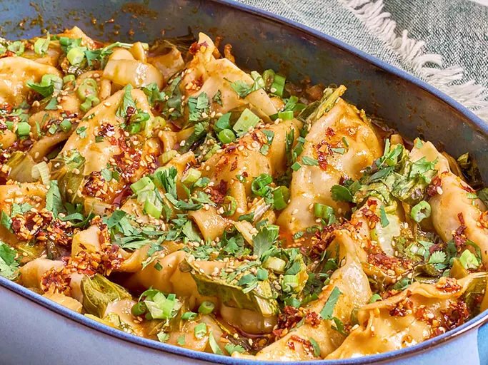

One Pan Dumpling Dinner

Description
Craving easy dumplings?
This one pot recipe, complete with bok choy, chopped cilantro, and green onion, is perfect for you!
Ingredients
- 2 tsp minced fresh garlic
- 1 tsp minced fresh ginger
- 3 tbsp soy sauce
- 1 tbsp rice vinegar
- 2 tsp toasted sesame oil
- 2 tbsp red curry paste
- 1/2 cup full-fat coconut milk or cream
- 1/2 cup water
- 5 cups chopped boy choy
- 20 frozen chicken and vegetable or pork and vegetable dumplings
- 3 tbsp chopped cilantro
- 1/4 cup thinly sliced green onion
- 2 tsp toasted sesame seeds
- chili crunch oil (optional)
Steps
- Preheat the oven to 375 degrees F (190 degrees C).
- Stir together garlic, ginger, soy sauce, rice vinegar, sesame oil, curry paste, coconut milk, and water in a casserole dish until well combined. Add bok choy and toss lightly. Top with dumplings and cover casserole with foil.
- Bake in the preheated oven until dumplings are heated through at the center, about 25 minutes.
- Divide dumplings and bok choy among serving plates and top with sauce from the pan. Top evenly with cilantro, green onions, sesame seeds, and drizzle with chili crunch oil.
Home